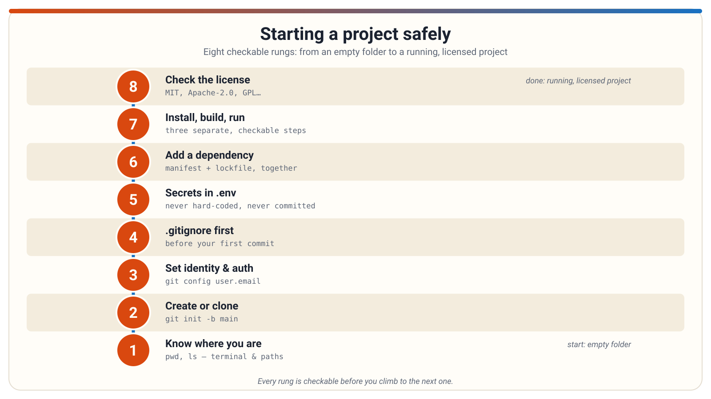

Starting a project safely
A short guide for non-programmers working with an AI coding agent: how to set up a project so it runs, stays organized, and keeps its secrets safe.
1 / 14
Presenter notes
Welcome. This deck is about the setup steps that come before any real coding, and how to review an AI agent's work at each step.
Deeper notes
Most beginners think coding starts with writing code. In practice, a project's safety and success depend on the unglamorous setup: knowing where you are, tracking your files, and keeping secrets out. Ask the room: how many of you have let an AI tool "just do it" without knowing what it was doing? That's the habit we're changing.
Suggested graphic: A friendly title illustration: a laptop showing a terminal window, with a small robot assistant beside it and a checklist floating between them.
Starting a project safely
Know your layers: terminal, shell, command
- The terminal is the window where text appears.
- The shell is the program inside it that reads what you type and runs it.
- The command is the program the shell starts, plus its options and arguments.
- A command's shape:
program-name --option value target. - You don't need to write scripts — just learn to read: "that's the program, those are options, that's the target."
- If you can't identify the program and the target, ask the agent what the command does before approving it.
2 / 14
Presenter notes
When the agent runs something, it's asking a shell to start a program. Reading the parts of a command is the whole skill here.
Deeper notes
A common mistake is treating the terminal window as "the shell" — but knowing which layer complained helps you ask good questions. "Command not found" is the shell; a crash is usually the program. Also, options are not universal: the same flag can mean different things to different programs. Ask the room: in npm install --save-dev some-package, which word is the program?
Suggested graphic: Three nested boxes labeled Terminal (outer window), Shell (interpreter inside), and Program (what actually runs), with a sample command annotated underneath.
- Terminal, shell, and commands (dev-tooling-literacy/terminal-shell-commands)
Starting a project safely
Where am I? Working directories and paths
- Every command runs from a folder — the current working directory.
- An absolute path is a full address from the root of the file system.
- A relative path is an address from wherever the command is standing.
- The same relative path can point to different files from different folders.
- "File not found" usually means "not found from here" — not that the file is gone.
- First question when an agent loses a file: what directory was it working from?
3 / 14
Presenter notes
Paths are addresses. Absolute addresses work from anywhere; relative ones depend on where the command is standing.
Deeper notes
This explains a huge share of confusing agent moments: the agent says a file "doesn't exist," or writes a file somewhere unexpected. It was standing in the wrong folder. Also watch for agents resetting to a default directory mid-task, and for absolute paths in shared projects — they may not exist on another machine. Ask: if the agent proposes writing to a path, what should you check first? (Whether it's inside your project folder.)
Suggested graphic: A simple folder tree with a stick figure standing in one folder; arrows showing a relative path from there versus an absolute path from the root.
- Working directories and paths (dev-tooling-literacy/working-directories-and-paths)
Starting a project safely
Create a repository, or clone one
- A repository is a project folder plus a hidden store (
.git) that records every saved change as a commit. git initcreates a new repository in the current folder — it commits nothing by itself.git clonemakes a full local copy of an existing repository, including its history.- A remote is a named link to a copy of the project on a host; after a clone, the default remote name is
origin. - A fork is a separate host-side copy of a repository — cloning is not forking.
git init -b main
git remote add origin <url>
git push -u origin main4 / 14
Presenter notes
Two ways to start: create the repository locally and push it up, or create it on the host and clone it down. Both end in the same place.
Deeper notes
The most common beginner surprise: after git init, nothing has been saved yet — files stay untracked until they are added and committed. Also, if the host repository was created with a README, a first push can fail because the histories diverge; prefer an empty remote for the first push. Ask: why does git init alone not put anything online? (It never talks to the network.)
Suggested graphic: Two paths drawn side by side: "local first" (folder → git init → add remote → push) and "host first" (create on host → clone down), both ending at the same picture of a local repo connected to a remote.
- Creating and cloning repositories (git-and-github/creating-and-cloning-repositories)
Starting a project safely
Tell Git who you are, and prove it to the host
- Identity:
user.nameanduser.emailare the name and email stamped on every commit you make. - Authentication is separate: it's how a host accepts or rejects your connection when you push or clone.
- On GitHub, HTTPS uses a personal access token (not your account password); a credential helper can remember it.
- Over SSH, a private key stays on your machine and only the public key is registered with the host.
- Never commit credentials, tokens, or private keys — once committed, they are part of history.
git config --global user.name "<name>"
git config --global user.email "<email>"5 / 14
Presenter notes
Identity is whose name goes on commits; authentication is whether the host lets you in. Set identity once, globally.
Deeper notes
Config comes in layers too — system, global, and local — with the most specific winning; this exercise sets identity at local scope so it never leaks into other repos. A classic failure: the HTTPS password prompt is not your account password — hosts that require tokens will reject it. And tokens are as sensitive as passwords: scope them narrowly, let them expire, and never paste them into chat or screenshots. If a secret ever gets committed, treat it as compromised and rotate it first — deleting the file later does not un-leak it. Ask: why are these two jobs separate? (One is local labeling; the other is network trust.)
Suggested graphic: Two separate doors: one labeled "Identity" (a name tag on a commit) and one labeled "Authentication" (a key/token at a host's gate), with a note that they are different jobs.
- Setup, configuration, and authentication (git-and-github/setup-configuration-and-authentication)
Starting a project safely
Write .gitignore before your first commit
- **
.gitignore** is a file listing patterns for files Git should leave alone — build output, logs, local settings. - Each line is a pattern;
#starts a comment;!re-includes a file a previous pattern excluded. - Ignore rules apply only to untracked files — they do not untrack files already committed.
- To stop tracking an already-tracked file: add the pattern, then
git rm --cached <file>(keeps the file on disk), then commit. git check-ignore <path>tests whether a rule actually catches a path.- A
.gitignorerule does not remove a secret that was already pushed — rotate it.
git rm --cached <file>
git check-ignore <path>6 / 14
Presenter notes
Write the ignore file before the first commit, so noise and secrets never enter history in the first place.
Deeper notes
The number-one confusion: "my ignore rule doesn't work!" The file is almost always already tracked — the rule only prevents future tracking. Untrack it deliberately with git rm --cached, then the rule takes effect. Also warn against over-broad patterns like a bare *.dat that accidentally exclude wanted files; test with git check-ignore. Ask: why can't ignoring hide a file from past commits? (History is already written.)
Suggested graphic: A bouncer at a club door labeled "commit": files with a .gitignore badge walk in, a file marked "secrets.log" is turned away — with a footnote that files already inside stay inside.
- .gitignore essentials (git-and-github/gitignore-essentials)
Starting a project safely
Configuration lives in environment variables
- Environment variables are named settings that programs read from their surroundings — outside the source files.
- Names are conventionally ALL-CAPS, like
PORTorDATABASE_URL. - Setting one is a shell action, not a code edit; a running program usually needs restarting to pick up a change.
- A variable set in one terminal does not exist in another — a classic "works here, not there" symptom.
- A prefixed command like
PORT=4000 npm run dev(macOS/Linux shell syntax) supplies a variable to that one command only; PowerShell's syntax for the same idea is different.
PORT=4000 npm run dev7 / 14
Presenter notes
Environment variables let the same files behave differently in different places — nothing in the code changed; the surroundings did.
Deeper notes
This is one of the first things to consider when a project "mysteriously" differs between two terminals, machines, or deployments. A common mistake: the agent says "I set the variable," but the already-running program holds the old values until restarted — so the fix appears not to work. Also, variables can point the project somewhere unexpected (like a different database), worth confirming before approving consequential actions. Ask: why does a new terminal not see the variable?
Suggested graphic: The same app box drawn twice, fed by two different dials labeled PORT=3000 and PORT=4000 — identical code, different behavior, because the environment differs.
- Environment variables (dev-tooling-literacy/environment-variables)
Starting a project safely
Keep secrets in a .env file, never in code
- A **
.env** file is a plain text file ofNAME=valuepairs that tools load as environment variables. - Hard-coding a secret into source code means the credential travels with every copy, commit, and demo.
- A
.envfile is a convention, not a standard — and it is not a secure vault; it's unencrypted text on disk. - Projects pair the private
.envwith a committed **.env.example** template with placeholder values. - Never paste real credentials into chat, email, or screenshots — put the value in the file yourself.
# .env
WEATHER_API_KEY=replace-me-not-a-real-key8 / 14
Presenter notes
The shape of good practice: move the secret out of the code and into configuration the program reads at runtime.
Deeper notes
Both versions run identically — the difference appears when the code is shared or committed. A common mistake is assuming ".env" means secure: it only keeps secrets out of source control, not away from anyone who can read the disk. Another trap: copying .env.example as your real .env and forgetting to replace the placeholders, so the app "runs but does nothing useful." Ask: what should you do if an agent asks you to paste an API key into a source file? (Question it.)
Suggested graphic: Side-by-side comparison: a code file with a key pasted inside (marked with a warning) versus a .env file beside the code holding the key, with the code reading it by name.
- .env files and keeping secrets out of code (dev-tooling-literacy/dotenv-and-secrets)
Starting a project safely
Push protection: the backstop when a secret slips
- Secret scanning detects known-format secrets (tokens, passwords, keys) that were committed to a repository.
- Push protection goes a step earlier: it blocks a push containing a detected secret before it reaches the host.
- When blocked, you can remove the secret and push again — or bypass with a stated reason, which generates an alert for review.
- These features can be enabled at the repository, organization, or personal-account level.
- Deleting a secret in a later commit does not remove it — it stays in git history; rotation is the reliable fix.
9 / 14
Presenter notes
Push protection is your safety net: even if a secret almost gets committed, the host can block it before it lands.
Deeper notes
Two cautions. First, a bypass is not a silent loophole — the reason is recorded and an alert is created, so don't bypass casually to "get unblocked." Second, don't rely on the backstop alone: a very large push with many already-alerted secrets may not be blocked, and a bypassed push means the secret is on the host and should be treated as exposed until verified. Ask: if a push gets blocked, what are your two options, and which is safer?
Suggested graphic: A checkpoint gate between your laptop and the host server: a push carrying a secret is stopped at the gate; a clean push passes through.
- Responding to secret-scanning and push-protection alerts (git-and-github/secret-scanning-push-protection)
Starting a project safely
The whole checklist, start to finish
- Safety steps come first: repository, identity,
.gitignore, then secrets. - Only after that: dependencies, install, build, run, and the license.
- Each rung is checkable before you move to the next one.

10 / 14
Presenter notes
Here is the entire path on one page — an empty folder becomes a tracked, configured, secret-safe, running project.
Deeper notes
Pause here and let the room absorb the sequence. Notice how the early steps (repository, .gitignore, secrets) come before any dependencies or running code — setup order matters, because a secret committed in step three is far harder to fix than one prevented in step two. Ask: which step do you think people skip most often, and what does that cost later?
Suggested graphic: The provided infographic itself: a step-by-step path from an empty folder through repository setup, ignore rules, secrets hygiene, dependencies, and finally a running, licensed project.
- Creating and cloning repositories (git-and-github/creating-and-cloning-repositories)
- .gitignore essentials (git-and-github/gitignore-essentials)
- .env files and keeping secrets out of code (dev-tooling-literacy/dotenv-and-secrets)
- Install, build, and run are different steps (dev-tooling-literacy/install-build-run)
Starting a project safely
Dependencies: someone else's code
- A dependency is third-party software your project uses but did not write — a library for dates, databases, or styling.
- A package manager finds, downloads, and organizes dependencies — npm for JavaScript, pip for Python.
- Packages come from a public registry — a shared online collection; the registry does not vouch for any package.
- Installing a package is adding external software, with its own authors, versions, and licenses — not "enabling a feature."
- A project may not run at all until its dependencies are installed — a normal first-run experience.
npm install date-fns11 / 14
Presenter notes
When the agent "installs a package," it's fetching real external software and wiring it into your project — routine, but a real change.
Deeper notes
The wrong mental model is "enabling a feature" of a language; packages are outside code with their own update cadence and license terms. A real failure mode is a mistyped or ambiguous package name — a quick sanity check of the name against its registry page is reasonable due diligence. Ask: when an agent adds several packages at once, what should you ask about each one? (Which package, and why.)
Suggested graphic: A shopping cart metaphor: your project's cart receiving labeled packages from a large public marketplace shelf, each package with its own author tag.
- Dependencies and package managers (dev-tooling-literacy/dependencies-and-package-managers)
Starting a project safely
Manifest vs. lockfile: the list and the receipt
- A manifest (like
package.json) records what the project asks for — often with flexible version ranges like^4.2.1("compatible with 4.2.1"). - A lockfile (like
package-lock.json) records what was actually installed — exact versions for the whole dependency tree. - Mental model: the manifest is the shopping list; the lockfile is the receipt.
- One install legitimately changes both files — that's the system working, not the agent being sloppy.
- Commit both files; if either is missing, collaborators may install different exact versions.
- Don't edit a lockfile by hand — the package manager maintains it.
12 / 14
Presenter notes
The manifest states intent; the lockfile records resolution. Seeing both change together during an install is a good sign.
Deeper notes
This distinction explains why an agent touches more than one file when adding a dependency — and gives you a review habit: check that both changed together, and ask the agent to explain the manifest change in plain language. A common mistake is assuming the manifest's version range is what got installed; the lockfile is the authoritative record. Also, a regenerated lockfile does not mean the app was tested. Ask: what breaks if a teammate commits the manifest but not the lockfile?
Suggested graphic: Two documents side by side: a handwritten shopping list ("flour") next to a printed receipt ("this exact brand and bag size"), connected by an arrow.
- Dependency manifests vs. lockfiles (dev-tooling-literacy/manifests-vs-lockfiles)
Starting a project safely
Virtual environments: one room per project
- A virtual environment is a project-specific, isolated space for dependencies — instead of installing onto the whole machine.
- Two projects can use different versions of the same package without conflicting.
- Activating an environment points the terminal at that room, so installs land in the right place.
- "Module not found" after a successful-looking install often means the package went into a different (or no) environment.
- An agent creating or activating an environment is doing deliberate, conventional setup — not padding the task.
- The environment folder itself is excluded from version control; the dependency list is shared, and the environment is rebuilt.
13 / 14
Presenter notes
Isolation keeps projects from interfering with each other and with the machine. Activation is what makes installs land in the right room.
Deeper notes
The most common symptom of an environment mismatch: the install succeeds but the project still can't find the package — it went somewhere the project doesn't look. Activation is per-terminal, per-session, so a new terminal may mean the environment is no longer active — a frequent source of "it worked yesterday" confusion. And don't confuse isolation with safety: a venv limits interference, not what an agent can do, so it's not a reason to auto-approve actions. Ask: why not just install everything globally?
Suggested graphic: Two separate rooms side by side, each holding its own stack of package boxes labeled with different version numbers, with a door labeled "activate" leading into one room.
- Virtual environments: keeping dependencies separate (dev-tooling-literacy/virtual-environments)
Starting a project safely
Install, build, run — and read the license
- Install, build, and run are three separate steps, each able to succeed or fail on its own.
- A successful build means artifacts were generated — it is not proof the app is running.
- "The app is running" is only confirmed by actually reaching the address it reports (like a localhost URL on a port).
- A license file (
LICENSE,COPYING,NOTICE) states the conditions for using someone else's code. - Permissive licenses (MIT, Apache-2.0) typically require keeping attribution; copyleft licenses (GPL family) can impose sharing obligations.
- "Easy to install" is not "free of conditions" — and an agent installing code does not remove your obligation to check.
14 / 14
Presenter notes
Ask which step the agent is describing before drawing conclusions — and remember every dependency arrives with a license attached.
Deeper notes
The most common misread is assuming build success means a working app; a clean build with nothing running produces nothing you can open. Verify the run claim by actually visiting the reported address. On licensing: approving an install is not a license review, and obligations travel through the whole dependency tree — code copied from tutorials or AI suggestions can carry licenses too. Ask: if the agent says "installed and built," what question should you ask next? (Is it running, and where?)
Suggested graphic: A three-stage assembly line (Install → Build → Run) with a "running?" checkpoint light at the end, plus a small license tag attached to every incoming package box.
- Install, build, and run are different steps (dev-tooling-literacy/install-build-run)
- License files and third-party obligations (dev-tooling-literacy/license-files)